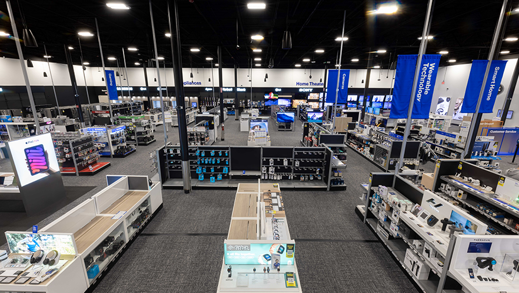
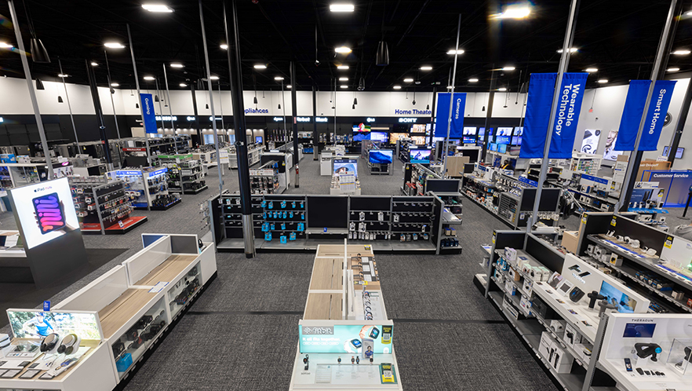
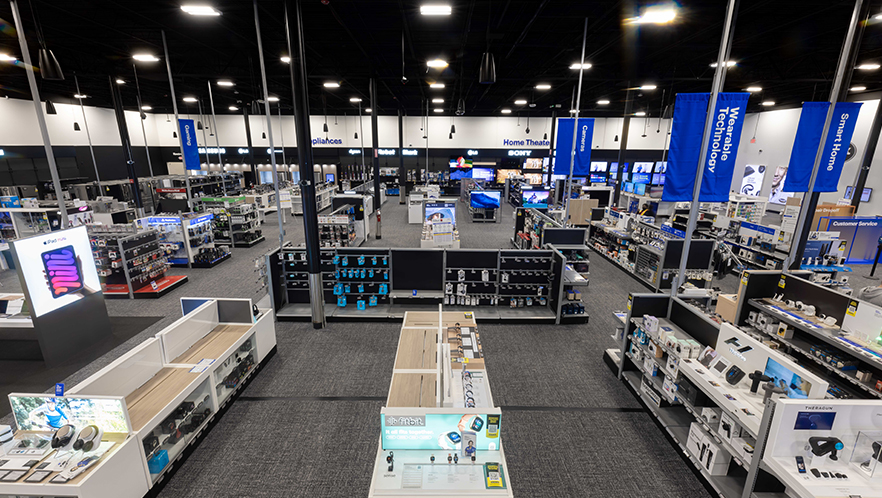

Kyle Johnson
My name is Kyle Johnson, and I am a committed student at the University of California, Riverside, where I am working for a degree in mathematics. I am also a member of the fraternity Kappa Sigma. I have a strong work ethic and a love of solving problems, which I apply to both my academic work and my social obligations. In addition to preparing him for a profession that appreciates accuracy and analytical abilities, my math major at UCR has enabled me to delve into intricate ideas and cultivate an organized way of thinking.
I have demonstrated my exceptional time management and responsibility prioritization skills by juggling employment and study since high school. He is now financially independent thanks to this work experience, which has also given him insightful knowledge about a variety of professional settings. My prior employment history demonstrates my dedication to self-improvement and flexibility in addressing various jobs and obstacles. My organizational abilities have improved as a result of juggling work, school, and fraternity obligations. He is also a proactive and trustworthy team player in social, professional, and educational contexts.
I've discovered a community of support and a chance to advance both professionally and socially in my fraternity. My academic experience has been enhanced and my network has grown as a result of the fraternity experience, which has enabled him to assume leadership roles, organize events, and form enduring friendships. He has learned the value of cooperation and respect for one another from being a part of this fraternity, which is something I apply to every aspect of my life.
I'm concentrating on using my degree in mathematics to investigate employment options that complement my present analytical abilities and love of problem-solving. I am open to a variety of options, including data science and finance, and I am keen to contribute significantly in whatever subject I ultimately decide to pursue. I try my best to exhibit the traits of a committed, well-rounded person prepared to take on new challenges and thrive in any effort I undertake, supported by a strong foundation of academic performance, real-world work experience, and fraternity involvement.
I can now pursue my goals with a high degree of assurance because to these talents. Although my strong work ethic is very helpful in any professional setting, I also have a great desire to learn new things and am always eager to learn new things. At the moment, I work at Best Buy, a tech business dedicated to giving customers the greatest possible experience. My love of learning and my social skills have both greatly benefited from a work that prioritizes other people's experiences. My ability to get along with nearly anyone has also helped me in any line of work.
Experience
Fraternity
• Set up multiple community service events.
• Made connections with many other students similar to me
• Developed exceptional social skills
Sales Associate
• Responsible for answering complicated questions about our products
• Ensuring a positive customer experience
Mechanic
• Fixed Arcade and bowling machines
• General Maintenance of building
• Had to work in a swift and timely manor with multiple different tools and equipment.
Education
UC Riverside
Elsinore High School
Portfolio

 

